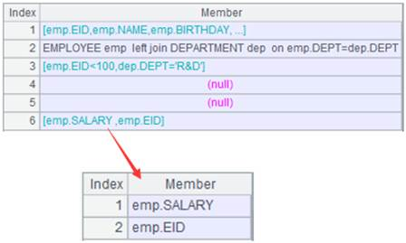
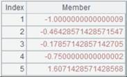
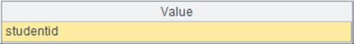

Description:
Find records from an in-memory table according to the specified primary key value(s).
Syntax:
k.row(T)
Note:
The function finds records from in-memory table T according to the specified primary key value(s) k.
Parameter:
|
k |
Primary key value(s); use a sequence to represent multiple key values |
|
T |
An in-memory table |
Return value:
A record
Example:
|
|
A |
|
|
1 |
=demo.cursor("select EID,NAME,GENDER from employee where EID< 10") |
Return a cursor |
|
2 |
=A1.memory() |
Return an in-memory table  |
|
3 |
=A2.keys(EID) |
Set EID as the in-memory table’s key |
|
4 |
=2.row(A2) |
Find the record where the primary key value is 2  |
|
5 |
=A2.keys(EID,GENDER) |
Set EID and NAME as the keys of the in-memory table |
|
6 |
=[3,"F"].row(A2) |
Find the record where the primary key value is [3,"F"]  |